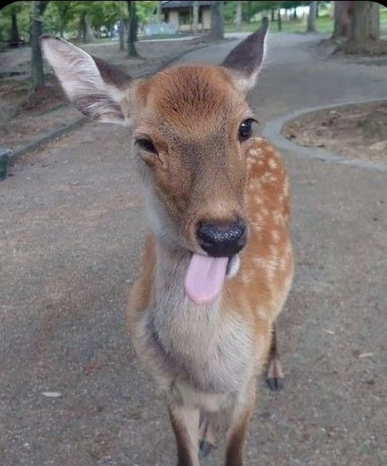
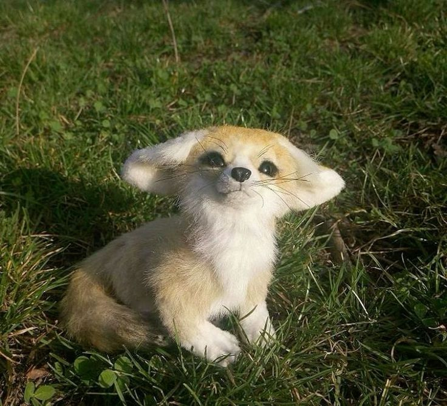
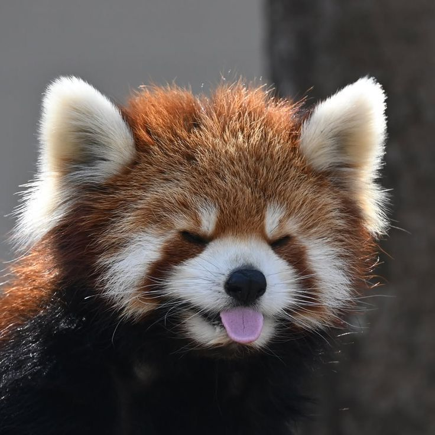
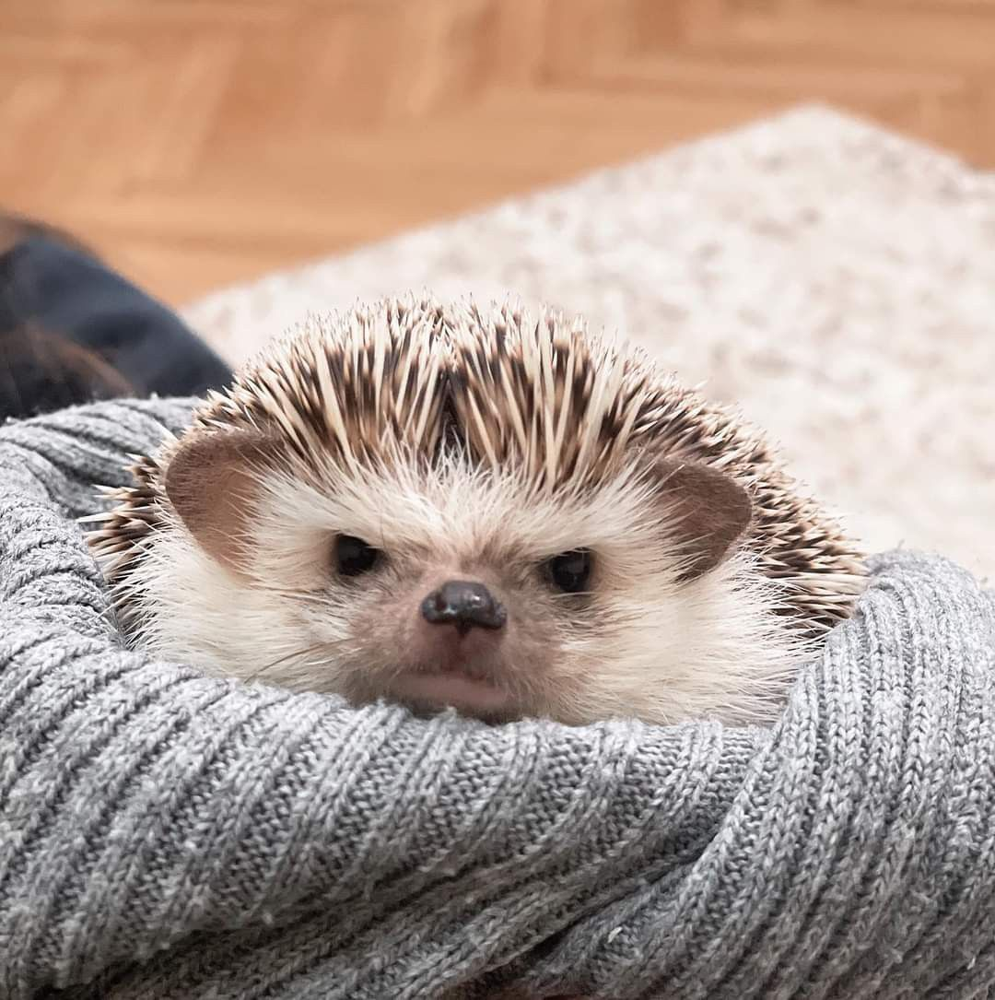
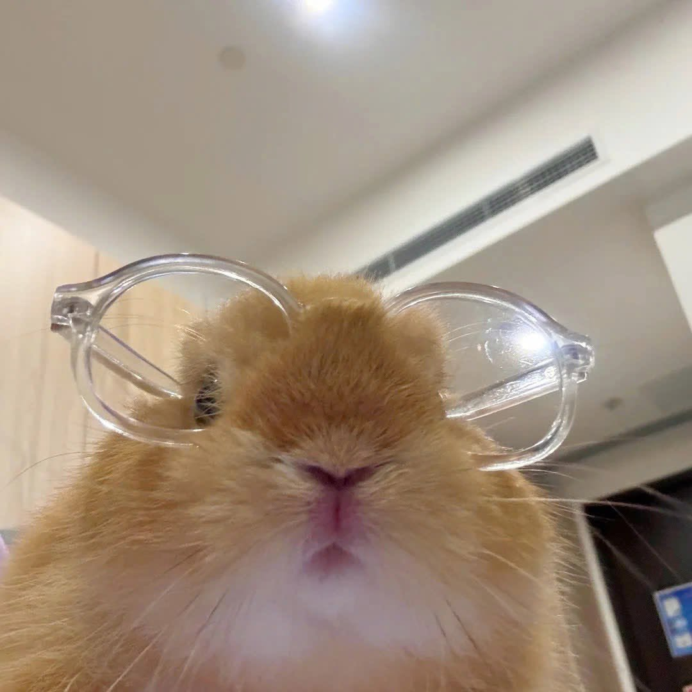
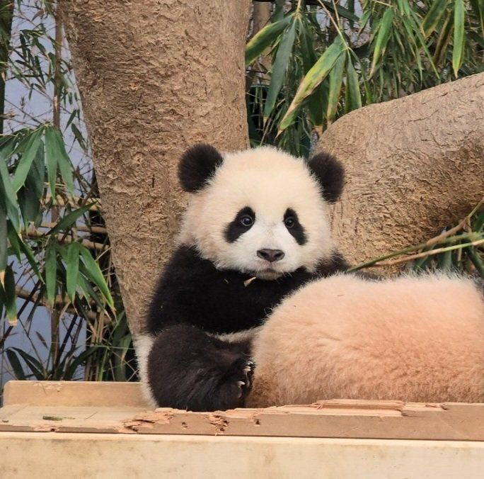
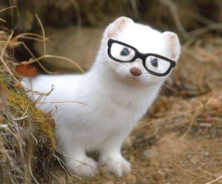

♡ Bem-vindo ao meu cantinho ♡
Esse é meu pequeno espaço para colocar algumas das coisas que eu gosto, espero que gostem!







Oi! Meu nome é Anna e atualmente estudo no SESI, no 2º ano do Ensino Médio. Além da escola, faço o curso técnico de Análise e Desenvolvimento de Sistemas no SENAI. No meu tempo livre, gosto de tocar teclado, ler, cozinhar e, claro, dormir! Também adoro ouvir música pop, assistir a séries e filmes da Disney e viajar. Minhas cores favoritas são rosa e vermelho. Por estar fazendo o curso de ADS, já tenho conhecimentos básicos em programação e desenvolvimento de sistemas. Tenho interesse em aprender mais sobre desenvolvimento de sites, aplicativos, Python e outras tecnologias da área. Para o futuro, meu objetivo é continuar estudando, aprender cada vez mais e conseguir trabalhar com algo que eu goste, além de construir uma carreira da qual eu possa me orgulhar.